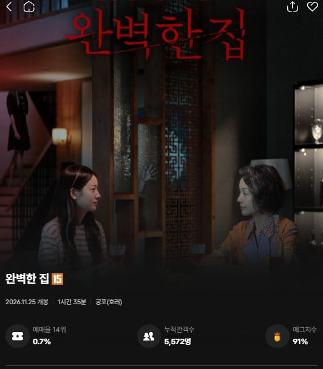
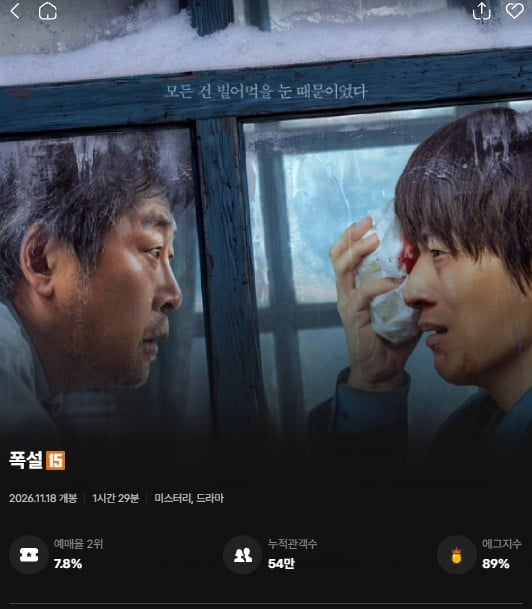
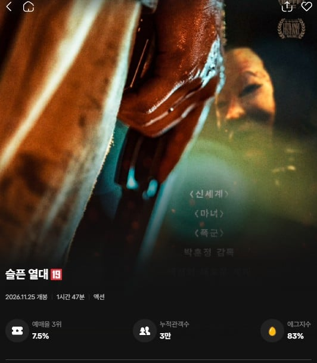

완벽한집 91%

폭설 89%

슬픈 열대 83%
공포 영화가 제일 높은 건 예상 밖이네

완벽한집 91%

폭설 89%

슬픈 열대 83%
공포 영화가 제일 높은 건 예상 밖이네
영화관에서 보면 정말정말 후회할거야
남는게 여주가 매력있다 단 하나밖에 없음
스토리는 아예 기대하면 안되고
아니 그정도야!?!? 일부러 아무것도 스포 안 당하려고 아무것도 안찾아 보고 심지어 예고편도 안봤는데..
아아 내 기대작이...
혹시 마녀2,귀공자 이거 재밌게봄? 그럼 슬픈열대도 재밌게볼듯
액션은 화려하거든 겉멋부리고 분위기잡는 그런것도 잘하는감독 이기도하고
근데 정작 중요한 스토리는 그냥 버린느낌이라 머리비우고 봐도 결말이 다보임
마녀는 안보고 귀공자는 봤는데.. 귀공자도 많이 아쉽던데ㅠ 슬픈 열대 걍 나중에 봐야겠다ㅋㅋㅋ
근데 귀공자 타임킬링용으로 괜찮지않음??
그냥저냥 머리비우고 볼만은 했는데 영화관에 갈정도는 아니라고봐서
ㅋㅋㅋ 돈을 버리고 싶으면 보셈
한국영화 문제점이 시나리오도 있지만 요즘들어 포스터를 너무 줫밥같이 만들음 이유가 뭐지
약간 고착화 되있는것도 한몫하는거 같음
박시영 디자이너가 만든 포스터 보면 감탄만 나오는데
살기 팍팍할수록 오컬트나 공포물이 떡상한다고함
폭설이 재밌어보이긴하네
기대하고 영화관가서 봤다가 여친이랑 영화 흉보면서 나옴
나 오늘 극장에서 고인 아파트 보고 왔다.......
난 열대 재밌게 봤음
김명민 영화 선구안 개폭망이던데 드라마는 개쩌는데
이번건 볼만한?
에그 83이면;;;;
지금 상영하는거중에 뭐가 제일 볼만함?
그로테스크라고 스토리3개 나오는 애니 영화 있는데 그게 볼만함. 에리짱이 개귀여움
https://youtu.be/l2ee8VuWvH4
호시노 겐? ㄷㄷ\
공포영화는 보는사람만 보니까 그런거아냐?
에그지수가 변별력이 있냐?
ㄹㅇ. 변별력 있는건 한국은 왓챠 점수, 해외는 로튼 뿐이지
사실 주관적인 경험이 큰게 영화라서
내 경험에서 포화속으로도 수작이었음
뭐지 하고 찾아보니까 완벽한 집 저거 전 프나 멤버 주연작이네 그래서 점수가 높은 듯
계란지수는 뭐야
신세계 후광빨
완벽한 집 볼만함??
그런데 보고 싶은 건 슬플 열대